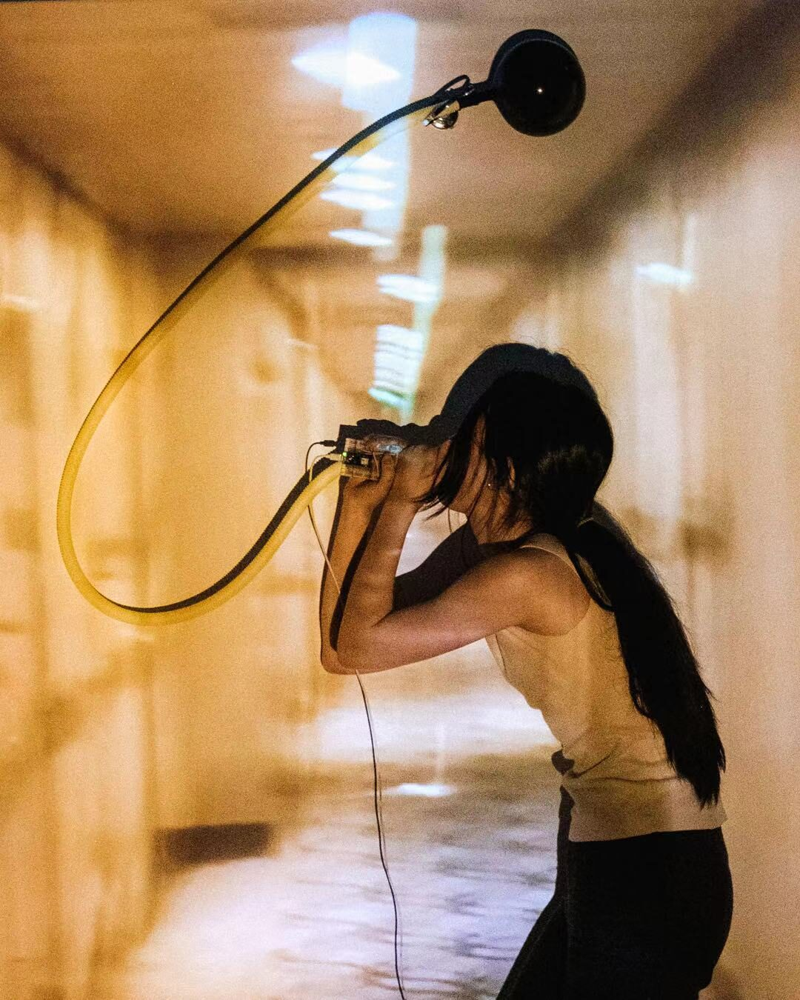

Balloon 4.0
Balloon 4.0
Vistanny Gu
1. PubPub Link
https://nime.pubpub.org/pub/yy2bqbyn/draft?access=qo9ysbw4
2.Conference Abstraction
This negotiation is facilitated by Drowsy Office™️. It takes place between the performer A and the balloon B. The subject is air, or pressure, or vibration, or energy, or desire.
Trade will be initiated by A and the last argument will always be made by B. According to the barter agreement, both parties agree to transform the same value of traded energy into sonic airwaves, but never do so at the same time. This output will be dispersed in the room.
Pushing and pulling takes places in a closed system connecting nose, lungs, mouth, and balloon via tracheae and plastic tube.
As lungs and balloon are swelling and contracting in turns, the exchange is visualised on a large projection.
(Compressed all the words into the lung, the alveoli are inflated and the balloon is deflated.)
The explosion of the information inside her, The feeling of an over force. The information consume itself by exchange.
The siren echoes in air, for the sake of memory.
3.Requirements
Equipment:
- an adjustable ceiling or wall mount (hook or fishing wire) for the instrument. The mount should be located right in front of a large projection space on the wall.
- A projector
Space:
-a projectable wall
4.Program Description
(Technical introduction)
The speed and playback direction of the video are controlled by the volume and frequency of the sound. The instrument uses an Arduino board and visuals are produced in TouchDesigner.
5. Media
x


Youtube Link
https://youtu.be/mLIo_q2az30
6. ACKNOWLEDGEMENTS
Specially thanks to Leon Eckert who gave me helps and support in the project.